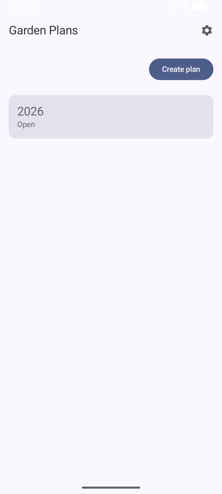
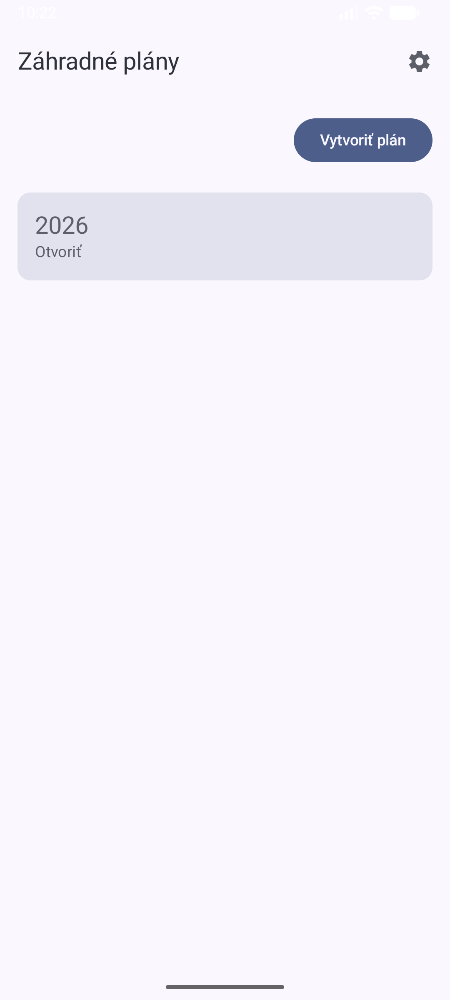
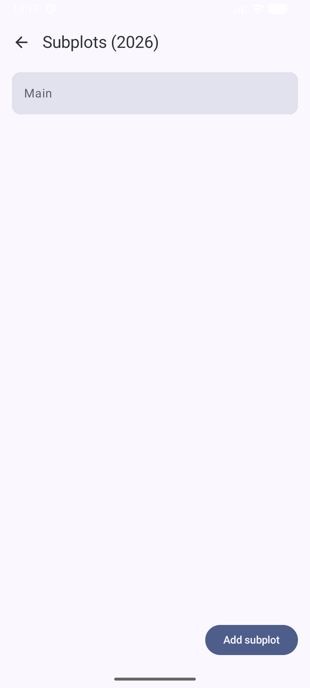
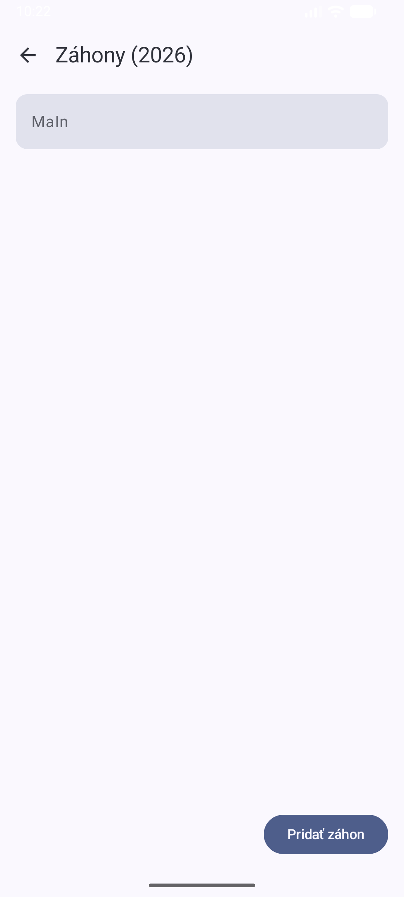
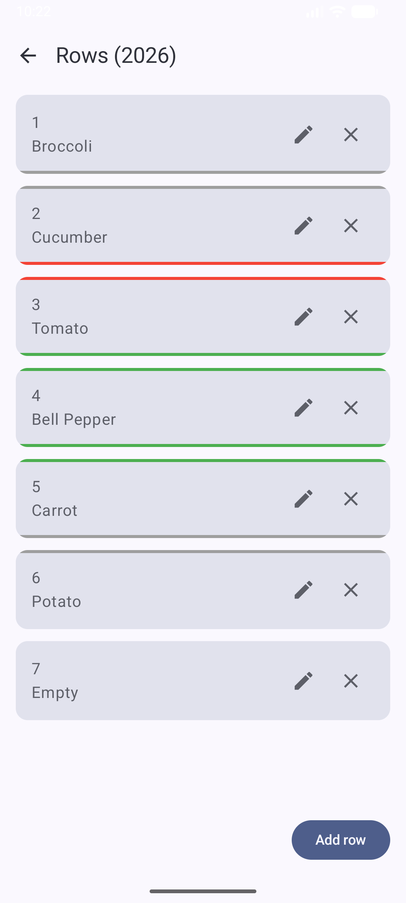
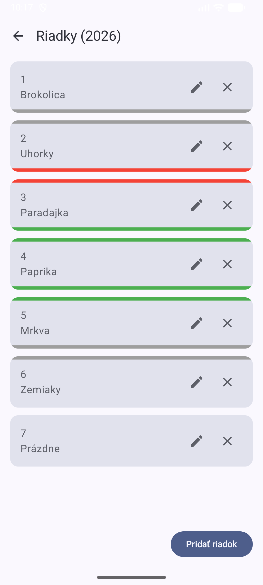

Plan your garden beds, track companion planting, and grow smarter — all in one app.
Plánujte záhony, sledujte spoločné pestovanie a pestujte múdrejšie — všetko v jednej aplikácii.
Create garden plans for each year. Organize subplots and rows, assign plants, and reorder with intuitive drag-and-drop.
Vytvorte záhradné plány pre každý rok. Organizujte záhony a riadky, priraďte plodiny a usporiadajte ich ťahaním.
See at a glance which plants thrive together. Color-coded compatibility indicators show beneficial, neutral, and detrimental neighbors.
Na prvý pohľad vidíte, ktoré plodiny spolu prosperujú. Farebné indikátory ukazujú prospešné, neutrálne a škodlivé susedstvo.
Get automatic warnings when planting the same family in the same position as last year, helping you maintain healthy soil.
Automatické upozornenia pri výsadbe rovnakej čeľade na rovnakej pozícii ako minulý rok pomáhajú udržať zdravú pôdu.
Full support for English and Slovak, with system language auto-detection. Switch languages anytime in settings.
Plná podpora angličtiny a slovenčiny s automatickou detekciou jazyka systému. Jazyk môžete kedykoľvek zmeniť v nastaveniach.






Get the latest version from GitHub Releases.
Stiahnite si najnovšiu verziu z GitHub Releases.
Download APK Stiahnuť APK